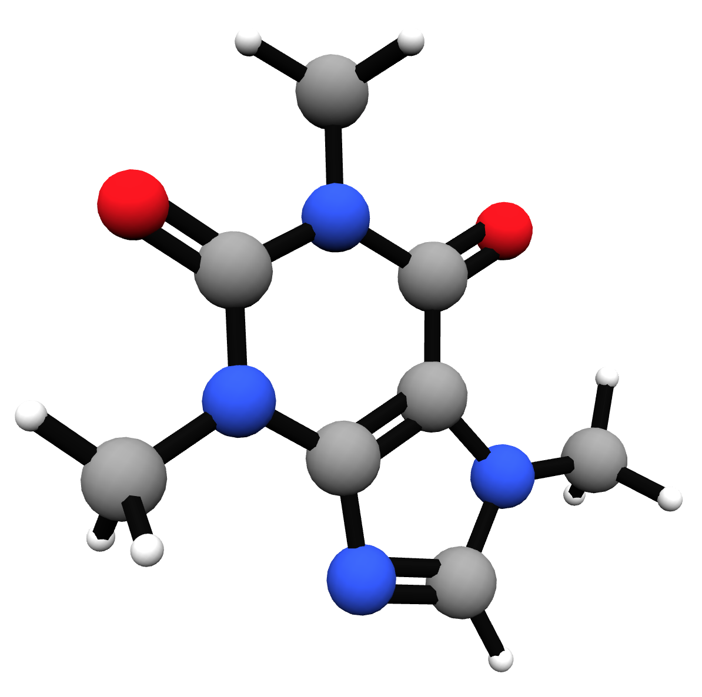

An embeddable webGL molecule viewer and file format converter.

imolecule.create('my-selector');
imolecule.draw(myMolecule);
where 'my-selector' is where you want to place imolecule, and myMolecule is
an object. See below for more on the object structure, or just check out the
included examples. The imolecule.create() method takes a few optional parameters,
specifying common drawing and camera types.
options = {
drawingType: "ball and stick", // Can be "ball and stick", "wireframe", or "space filling"
cameraType: "perspective", // Can be "perspective" or "orthographic"
shader: THREE.ShaderToon.toon2, // three.js shader algorithm to use
z: 15 // Initial camera distance to origin
};
At its core, imolecule takes input chemical structures as javascript objects. As an example, consider benzene:
{
atoms: [
{ element: "C", location: [ -0.762160, 1.168557, 0.022754 ] },
{ element: "C", location: [ 0.631044, 1.242862, -0.013022 ] },
{ element: "C", location: [ 1.391783, 0.076397, -0.012244 ] },
{ element: "C", location: [ 0.762101, -1.168506, 0.026080 ] },
{ element: "C", location: [ -0.631044, -1.242903, -0.011791 ] },
{ element: "C", location: [ -1.391806, -0.076430, -0.014083 ] }
],
bonds: [
{ atoms: [ 0, 1 ], order: 2 },
{ atoms: [ 1, 2 ], order: 1 },
{ atoms: [ 2, 3 ], order: 2 },
{ atoms: [ 3, 4 ], order: 1 },
{ atoms: [ 4, 5 ], order: 2 },
{ atoms: [ 0, 5 ], order: 1 }
]
}
If you want to make properly formatted JSON, you can use either format_converter.py as a script
or a running imolecule instance to convert most chemical file formats to JSON.
This program optionally uses tornado and zeroMQ to create and connect to a server that handles chemical file format conversion with Open Babel.
To run in its provided state, you will need zeroMQ's Python bindings, Tornado, and Tornadio.
pip install pyzmq tornado tornadio
You will also need Open Babel, which is best installed from source. For more, read through the Open Babel installation instructions.
git clone https://github.com/openbabel/openbabel
mkdir build && cd build
cmake ../openbabel -DPYTHON_BINDINGS=ON
make && make install
Once this is set up, run the full program with
python server.py
The default site allows for loading molecules via a simple file drag-and-drop interface. Drag a file to anywhere in the browser and drop to load. This interface communicates with openbabel via websocket, so most file formats should work. Be sure to set the extensions of your files to their data type (ie. "mol", "pdb", etc.) for format inference to work properly.
If you have an existing web server, tornado can be easily switched out for other libraries. If you want to use imolecule as a starting point for a broader user interface, the server is written to be extensible. In both cases, read through the source code - it's surprisingly short.
The IPython notebook is an open-source tool poised to replace MATLAB in many applications. As a scientist of sorts, I'm all about it. Therefore, I made handles to use imolecule with the notebook.
Open a new notebook and make sure that the imolecule directory is either in the directory you started the notebook or your PYTHONPATH. You can test the setup by typing:
import imolecule
imolecule.draw("CC1(C(N2C(S1)C(C2=O)NC(=O)CC3=CC=CC=C3)C(=O)O)C")
into a notebook cell. This should convert, optimize and draw the specified SMILES structure (in this case, penicillin) into the notebook. Note that this requires Open Babel to function.
The drawer can handle any format specified here, and can be set up to better handle different use cases. Check out the docstrings associated with the IPython interface for more.